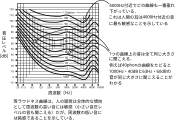

2026年
問題82 音と振動に関する用語とその定義との組合せとして，最も不適当なものは次のうちどれか．
(1)音圧レベル 人間の最小可聴値の音圧を基準として定義された尺度
(2)パワーレベル 音原の音響出力をデシベル尺度で表記したもの
(3)騒音レベル 人間の聴覚の周波数特性で補正した，騒音の大きさを表す尺度
(4)等価騒音レベル 変動する騒音を等価で継続する定常騒音と見なした場合の騒音レベル
(5)時間率レベル あるレベル以下の振動に曝露される時間の，観測時間内に占める割合
2026年
問題82 正解（5） 頻出度AAA
「時間率レベル」は，あるレベル以上の振動に曝露される時間の，観測時間内に占める割合である．
時間率レベルは，不規則かつ大幅に変動する振動の場合の表示方法で，振動規制法では，振動レベル計で，\(VL\)（振動レベル）を5秒間隔で100回程度測定し，全ての測定値を大きさの順に並べ替えて大きい方から 10％目の数値である80％レンジ上端値L10を用いる．100回のうち，10回が75dB以上であれば，L10は75dBとなる.
工場や道路交通振動の規制基準は昼夜で異なり，夜間が5dB厳しくなっている．
-(1) ，-(2) ，-(3)音圧レベル，パワーレベル，騒音レベル
音の物理的な強さは音の伝わる方向に対して垂直な単位面積を単位時間に通過する音のエネルギーなので，単位は［W（ワット）/m2］である．
人間の耳の可聴範囲はエネルギー的には約10-12W/m2から最大102W/m2であって，その範囲は14桁に及ぶ．
ある基準値との比の対数をとって量を表示することをレベル表示（デシベル尺度）という．
考察の対象とする量が数十桁にわたり，そのままでは扱いにくく，また科学的に数字の桁数での議論でよい場合にレベル表示が用いられる．これを音に用いて，音響工学では音のパワーレベルを次のように定義している．
\[L_i=10\log_{10}\frac{I}{I_0}\]
上記の可聴範囲（10-12W/m2～最大102W/m2）をレベル表示すると， \begin{align} L_i{\rm （最小）} & = 10\log_{10} \frac{I}{I_0} \notag\\[5pt] &=10\log_{10} \frac{10^{-12}}{10^{-12}} \notag\\[5pt] &=10\log_{10}1=0\ {\rm dB} \notag \end{align} \begin{align} L_i{\rm （最大）} & = 10\log_{10} \frac{I}{I_0} \notag\\[5pt] &=10\log_{10} \frac{10^2}{10^{-12}} \notag\\[5pt] &=10\log_{10}10^{14}=140\ {\rm dB} \notag \end{align}
レベル表示により，最小と最大値で1012～102と14桁もの開きがあったものが0～140dBと3桁で表現できることになる．
実際に音の強さを測定する場合は，エネルギーを直接測定することが難しいので，音圧\(p\)［Pa］を測定する．
音の強さは，空気の密度を\(\rho\)：［kg/m3］，音速を\(c\)：とすると，次式で表される． \[I=\frac{p^2}{\rho c}\]
すなわち，音の強さは，音圧の2乗に比例するので，音圧レベルを次のように定義すると，同じ音に対して強さのレベルと音圧レベルが一致することになる． \begin{align} L_p & = 10\log_{10} \left (\frac{p}{p_0} \right) \notag\\[5pt] &=2 \times \log_{10} \frac{p}{p_0} \notag\\[5pt] &=20\log_{10} \frac{p}{p_0} \notag \end{align}
例えば2Paの音圧レベルは， \begin{align} &20\log_{10} \frac{2}{2 \times 10^{-5}} \notag\\[5pt] &=20 \times \log_{10}10^5 \notag\\[5pt] &=20\times 5 =100\ {\rm dB} \notag \end{align}
さらに，この音圧レベルを，人の聴覚の周波数特性をあらわした等ラウドネス曲線（2026-82-1図）によって補正した音圧レベルをA特性音圧レベルといい，単なる音圧レベルと区別するために，単位に［dB(A)］を用いる．騒音計のA特性音圧レンジで計測した騒音レベル［dB(A)］は騒音の評価の基本となる．
2026-82-1図 等ラウドネス曲線

-(4)等価騒音レベル（LAeq）：一定時間にわたって時間的に変動する騒音レベルをエネルギー的に等価な定常騒音レベルで表した量．24時間等価騒音レベルなら，LAeq24h＝55dBなどと記述する．
環境基本法の騒音に関する環境基準にも用いられている（住宅地・夜間LAeq45dB以下，等）．